Objective
In this lesson you'll learn how to create menus with links to pages and other content, how to place menus in various locations, and how to customize and manage menus.
At the end of this lesson, you will be able to:
- Describe how menus support website navigation.
- Manage the primary menu in WordPress.
- Create a custom menu.
- Modify a menu by adding and removing items.
- Automate new menu items.
- Organize menu items by order and level.
- Place a menu in a secondary theme location.
- Utilize the "Custom Menu" widget.
Screening Questions
- Are you able to log in to WordPress as an administrator?
- Are you familiar with using the WordPress dashboard?
- Do you understand that themes control the layout of a website?
- Do you understand how hyperlinks are the primary means of website and web navigation?
- Can you differentiate pages and posts, as well as categories and tags?
Theme Menus
- WordPress themes may provide a default menu that automatically adds navigation for the pages of a website.
- The default menu is typically displayed on the home page and most pages throughout the website.
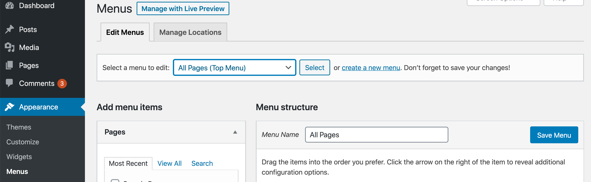
Theme Menus
- Themes and templates may display menus in whatever manner a designer chooses.
- Most websites will benefit from modifications of the primary menu along with the user of custom menus to improve navigation for users.
- Sitemaps can show how content is arranged
- Wireframes can indicate where actual menus are located and what items to include
- Other planning documents may describe how users navigate the website
Begin by locating the "primary menu" of your website.
Twenty Twenty theme with a simple primary menu. The menu is located in the upper right corner of the website layout above the header. Your menu may appear in a different location or have different page links.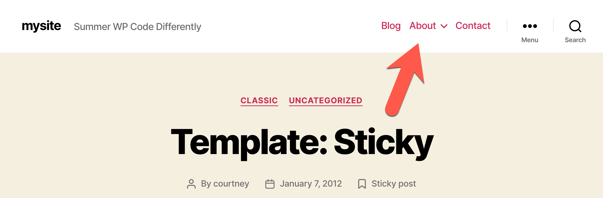
Managing Menus
Go to Appearance > Menus
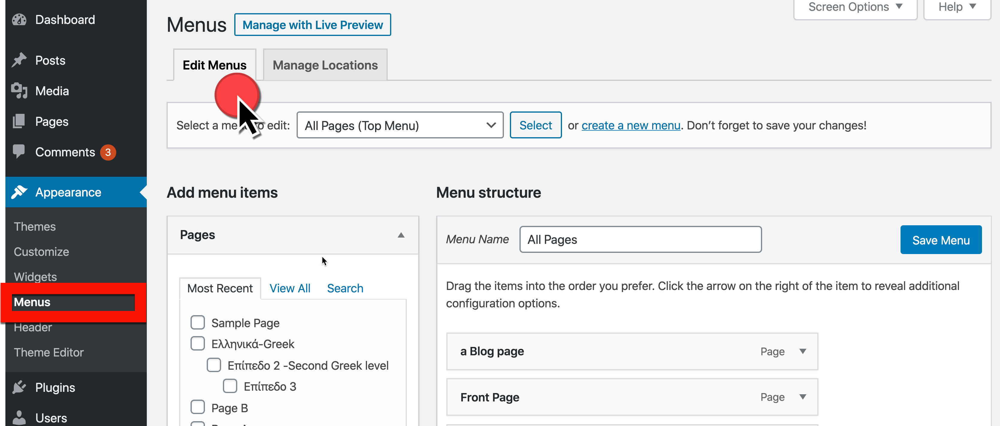 Menu > Edit Menu" width="850">
The "Manage Locations" tab sets where menus appear in the website layout.
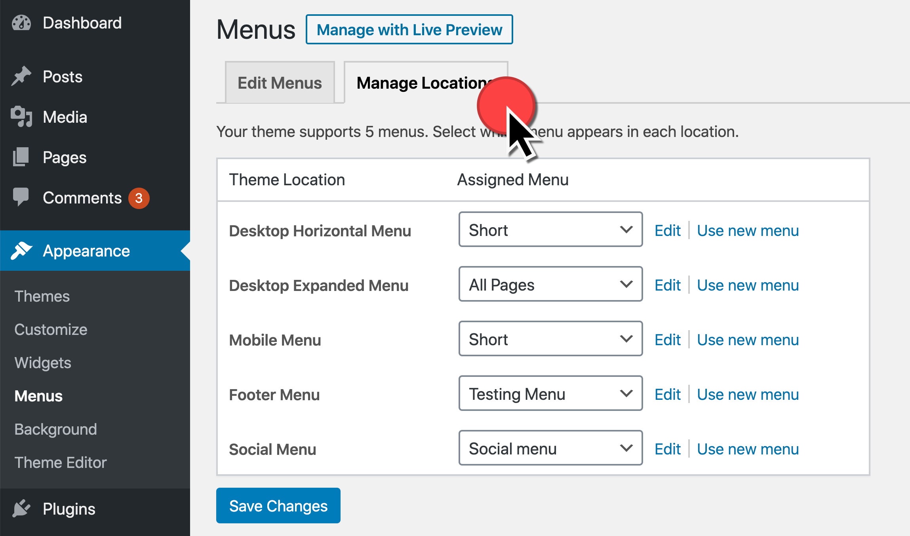
- Themes can support various menu locations, but all themes should have "Primary Menu" listed as a location.
- Use the dropdown menu under "Assigned Menu" to select a menu for the primary menu.
- In this example (using the theme unit test data) the "Short" menu is selected, but try any menu you have available with your content.
- Menu items that are followed by a downward facing caret (∨) can display a submenu associated with the top menu item.
- Test navigating the website with the menu items.
You can replace a default menu with a custom menu, and you can create multiple custom menus to use in the various menu locations provided by a theme. Custom menus have many benefits. They can:
- Show or hide specific pages
- Edit labels for pages
- Re-order pages
- Enable multi-level menus
- Add posts and post categories
- Allow for custom links to any URL
Create a Custom Menu
- Go to Appearance > Menus > Edit Menus
- Click the "create a new menu" link
- Type a short descriptive "Menu Name", as in this example for "Menu Test," then click the "Create Menu" button
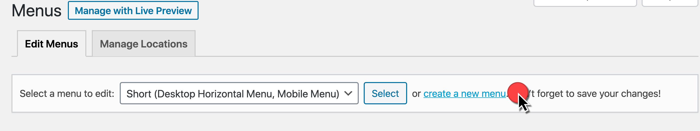
The new menu is empty to start, and you can add items
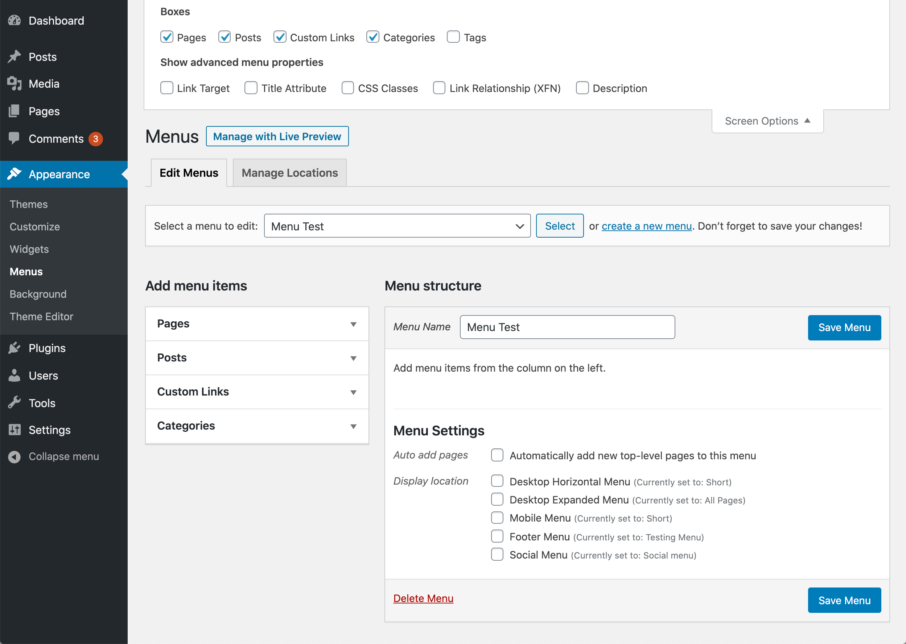
- Pages
- Posts
- Custom links
- Categories
- Tags
- Formats
- Use the Screen Options to display more
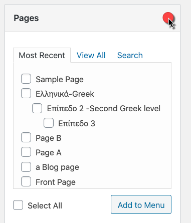
- Most Recent
- View All (reverse chronological)
- Search
- Select pages checkboxes
- Add to Menu
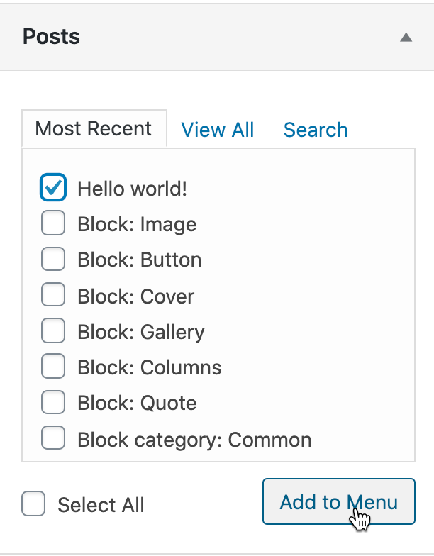
- Most Recent
- View All (reverse chronological)
- Search
- Select posts checkboxes
- Add to Menu
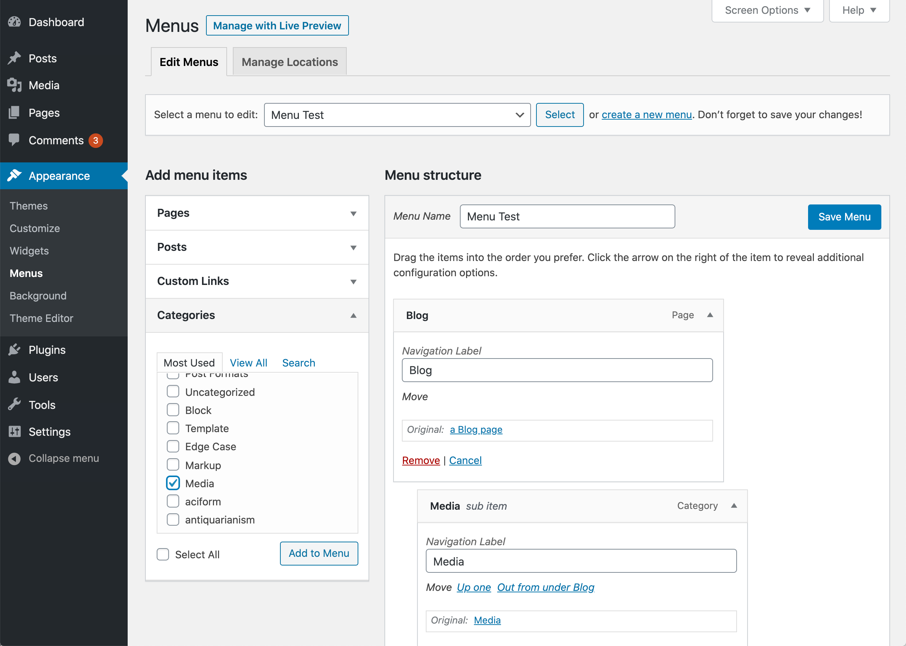
- Most Recent
- View All (reverse chronological)
- Search
- Select posts checkboxes
- Add to Menu
- Drag to desired level
Custom Links to anything
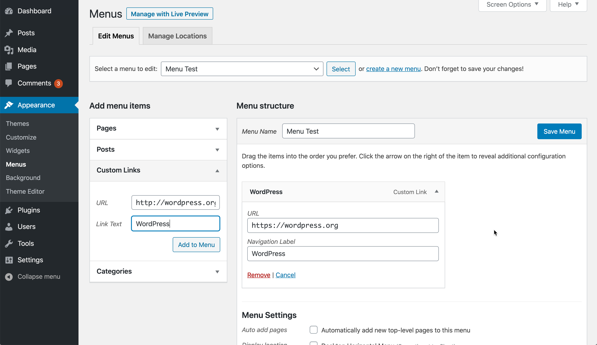
- Download a PDF document
- External website
- Elsewhere on your domain not within WordPress
Automating New Menu Items

- Auto Add Pages
- Does not handle child pages for sub items - manual override
Managing Menu Locations
- Primary - at top near header
- Theme documentation for additional placements
-
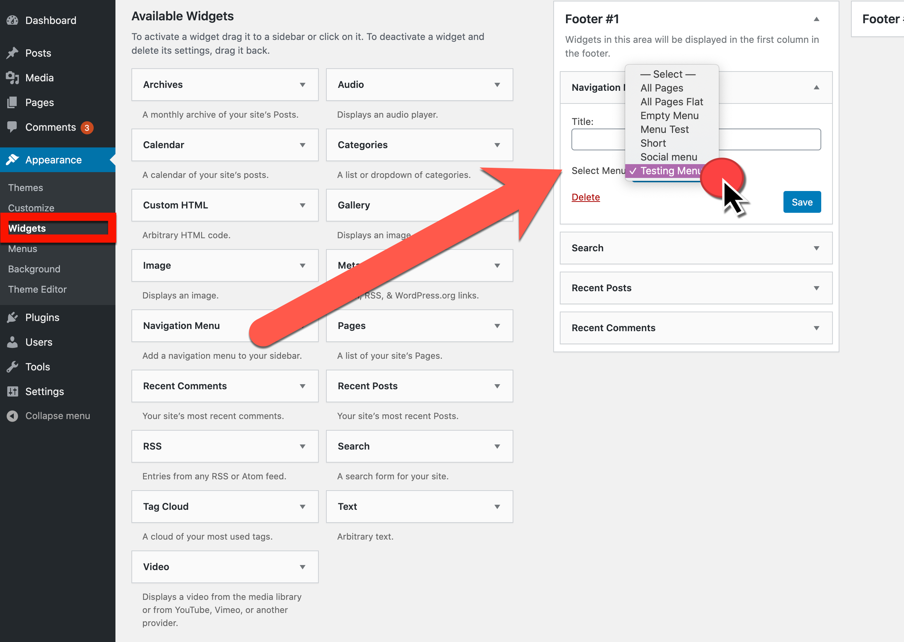
- Appearances > Widgets
- Add Navigation Menu widget
- Select the menu and save
Create a new menu that has multiple levels
- Do the submenus have to mirror the parent/child settings of pages?
- How does it display as a primary menu?
- How does it display as a secondary menu?
Create several custom menu items with external URLs that are not found on your website
- Can you add any website page?
- Can you add a social media page?
- Can you configure the link to open in a new window or tab?
What could be used to determine what menus are needed for a website?
- Site map
- Wireframe
- Planning document
- All of the above
- Answer: 4. All of the above
What is the default menu provided by most WordPress themes?
- Main menu
- Primary menu
- Header menu
- Answer: 2. Primary menu
Which is not listed in the choices for a type of menu item?
- Page
- Category
- Image
- Answer: 3. Image
How do you create a multi-level menu?
- Select multi-level when creating the menu.
- Use the Parent function of the pages.
- Drag the lower level menu items to the right.
- Answer:3. Drag the lower level menu items to the right.
What do you need to make a custom link?
- Social media account
- URL
- Theme support
- Answer:2. URL